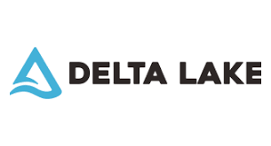

import pyspark
from delta import *
builder = (
pyspark.sql.SparkSession.builder.appName("MyApp")
.config("spark.sql.extensions", "io.delta.sql.DeltaSparkSessionExtension")
.config(
"spark.sql.catalog.spark_catalog",
"org.apache.spark.sql.delta.catalog.DeltaCatalog",
)
)
spark = configure_spark_with_delta_pip(builder).getOrCreate()Delta Lake - Overview
DeltaLake
Courses
DSAS

Key Features of Delta Lake:
- ACID Transactions: Delta Lake provides full ACID transactional capabilities, ensuring data integrity and consistency.
- Scalable Metadata Handling: It uses a unique approach to handle metadata, allowing it to scale to billions of partitions and trillions of files.
- Unified Batch and Streaming: Delta Lake supports both batch and streaming workloads with a unified experience.
- Schema Evolution: It allows for schema-on-read and schema-on-write, enabling users to evolve their datasets over time.
- Audit History: Delta Lake maintains a detailed audit trail of all changes, allowing for versioning and time-travel capabilities.
- Support for Deletes, Updates, and Merges: Delta Lake supports operations like DELETE, UPDATE, and MERGE INTO, which are typically not available in most data lakes.
Problems Delta Lake Solves:
- Data Reliability: Traditional data lakes often suffer from issues like data corruption, missing files, or duplicate data. Delta Lake’s ACID transactions eliminate these problems.
- Performance: By leveraging Spark’s capabilities and optimizing storage layer operations, Delta Lake provides faster query performance.
- Complex ETL Workflows: Delta Lake simplifies ETL workflows by supporting operations like upserts and deletes.
- Metadata Scalability: Handling metadata for large datasets can be challenging. Delta Lake’s approach to metadata ensures scalability and performance.
Significance of Delta Lake in the Data Stack:
- Enhanced Data Reliability: By providing ACID transactions, Delta Lake ensures that the data is reliable and consistent, which is crucial for analytical workloads.
- Flexibility: With support for schema evolution and a wide range of operations, Delta Lake offers flexibility in managing and processing data.
- Integration with Existing Tools: Delta Lake seamlessly integrates with existing tools and frameworks, ensuring that organizations can adopt it without significant changes to their existing infrastructure.
Integration with Spark:
- Native Integration: Delta Lake is built on top of Spark, ensuring native integration and optimization.
- Optimized Query Execution: Delta Lake leverages Spark’s Catalyst optimizer for efficient query execution.
- Use of Spark APIs: Users can utilize familiar Spark APIs to read and write data in Delta Lake, ensuring a smooth user experience.
Delta Lake is a significant addition to the data stack as it addresses many of the challenges faced by traditional data lakes. By providing ACID transactions, scalable metadata handling, and a range of operations, Delta Lake ensures that data is reliable, consistent, and easily accessible. Its deep integration with Spark further enhances its capabilities, making it a powerful tool for data processing and analytics.
ACID is an acronym that stands for Atomicity, Consistency, Isolation, and Durability. These are a set of properties that ensure reliable processing of database transactions. Let’s delve into each of these properties:
1. Atomicity:
Definition: Atomicity ensures that a transaction is treated as a single, indivisible unit, which means either all of its operations are executed or none of them are. If a transaction is interrupted (for example, due to a system crash or power failure), any changes that it made are rolled back to ensure the database remains in a consistent state.
Example: Consider a banking application where you are transferring money from one account to another. This transaction involves two operations: - Deducting the amount from the source account. - Adding the amount to the destination account.
If the system fails after deducting the amount but before adding it to the destination account, atomicity ensures that the deducted amount is rolled back to the source account, ensuring no money is lost.
2. Consistency:
Definition: Consistency ensures that a transaction brings the database from one valid state to another. After a transaction has been committed, the changes are permanent, and the database will be left in a consistent state. Any transaction that would violate the database’s consistency rules is rolled back.
Example: In the same banking application, suppose there’s a rule that an account balance should never go below $100. If a transaction tries to withdraw an amount that would violate this rule, the transaction would be rolled back, ensuring the database remains consistent.
3. Isolation:
Definition: Isolation ensures that concurrent transactions are executed in such a way that the results are the same as if the transactions were executed serially, one after the other. This means that the intermediate state of a transaction is invisible to other transactions.
Example: Imagine two transactions: - Transaction A reads a value and increases it by $10. - Transaction B reads the same value simultaneously and increases it by $20.
If these transactions are not isolated, they might both read the same initial value, say $100, and update it to $110 and $120, respectively. With proper isolation, the final value would be $130, as one transaction would wait for the other to complete before reading the updated value.
4. Durability:
Definition: Durability ensures that once a transaction has been committed, its effects are permanent, even in the case of system failures. This is typically achieved by storing transaction logs or using backup mechanisms.
Example: After completing a purchase in an online store, the transaction details are written to the database. Even if the system crashes immediately after, durability ensures that the transaction details are not lost and can be recovered when the system restarts.
ACID properties are fundamental to ensuring the reliability and robustness of database systems. They ensure that the data remains consistent and intact even in the face of system failures or concurrent access.
Create a Delta Table
- Underlying format uses columnar Parquet Files
- JSON delta log is used by the delta lake transactional core software
data = spark.range(0, 5)
data.write.format("delta").save("./delta-table", OVERWRITE=True) !ls delta-table/_delta_log
part-00000-aa7ed3d3-662a-46cf-b94f-f90235a78d46-c000.snappy.parquet
part-00001-c57f57a0-c72a-43ad-8529-a37859acd44f-c000.snappy.parquet
part-00002-50f9305f-41cc-43e6-b532-7f4c50233b3f-c000.snappy.parquet
part-00003-19ed009f-69d1-49ce-86f1-312cb074b6a3-c000.snappy.parquetRead the delta Table
df = spark.read.format("delta").load("./delta-table")
df.show()+---+
| id|
+---+
| 3|
| 4|
| 2|
| 0|
| 1|
+---+
Update table - overwrite
data = spark.range(5, 10)
data.write.format("delta").mode("overwrite").save("./delta-table") df = spark.read.format("delta").load("./delta-table")
df.show()+---+
| id|
+---+
| 8|
| 9|
| 5|
| 6|
| 7|
+---+
Conditional update without overwrite
from delta.tables import *
from pyspark.sql.functions import *deltaTable = DeltaTable.forPath(spark, "./delta-table")# Update every even value by adding 100 to it
deltaTable.update(condition=expr("id % 2 == 0"), set={"id": expr("id + 100")}) deltaTable.toDF().show()+---+
| id|
+---+
|108|
| 9|
| 5|
| 7|
|106|
+---+
# Delete every even value
deltaTable.delete(condition=expr("id % 2 == 0")) deltaTable.toDF().show()+---+
| id|
+---+
| 9|
| 5|
| 7|
+---+
# Upsert (merge) new data
newData = spark.range(0, 20)
deltaTable.alias("oldData").merge(
newData.alias("newData"), "oldData.id = newData.id"
).whenMatchedUpdate(set={"id": col("newData.id")}).whenNotMatchedInsert(
values={"id": col("newData.id")}
).execute() deltaTable.toDF().show()+---+
| id|
+---+
| 0|
| 1|
| 2|
| 3|
| 4|
| 5|
| 6|
| 7|
| 8|
| 9|
| 10|
| 11|
| 12|
| 13|
| 14|
| 15|
| 16|
| 17|
| 18|
| 19|
+---+
Read older versions of data using time travel
df = spark.read.format("delta").option("versionAsOf", 0).load("./delta-table")
df.show() +---+
| id|
+---+
| 3|
| 4|
| 2|
| 0|
| 1|
+---+
Looking at the underlying transaction log maintained by Delta Lake
!cat ./delta-table/_delta_log/00000000000000000003.json{"remove":{"path":"part-00000-ad39a0c3-57cd-4b19-bd34-c1322d1f026e-c000.snappy.parquet","deletionTimestamp":1698778757438,"dataChange":true,"extendedFileMetadata":true,"partitionValues":{},"size":486}}
{"remove":{"path":"part-00001-a61ba60f-f4eb-40c1-ab50-88fa3600e94a-c000.snappy.parquet","deletionTimestamp":1698778757438,"dataChange":true,"extendedFileMetadata":true,"partitionValues":{},"size":478}}
{"add":{"path":"part-00000-dbf8c991-8a1a-42b4-9b3e-93dcb13801fa-c000.snappy.parquet","partitionValues":{},"size":478,"modificationTime":1698778757430,"dataChange":true,"stats":"{\"numRecords\":1,\"minValues\":{\"id\":9},\"maxValues\":{\"id\":9},\"nullCount\":{\"id\":0}}"}}
{"commitInfo":{"timestamp":1698778757453,"operation":"DELETE","operationParameters":{"predicate":"[\"((id % 2L) = 0L)\"]"},"readVersion":2,"isolationLevel":"Serializable","isBlindAppend":false,"operationMetrics":{"numRemovedFiles":"2","numCopiedRows":"1","numAddedChangeFiles":"0","executionTimeMs":"899","numDeletedRows":"2","scanTimeMs":"722","numAddedFiles":"1","rewriteTimeMs":"177"},"engineInfo":"Apache-Spark/3.3.1 Delta-Lake/2.1.0","txnId":"951deaaf-e06b-464a-bbf1-a2e6bc62efb7"}}